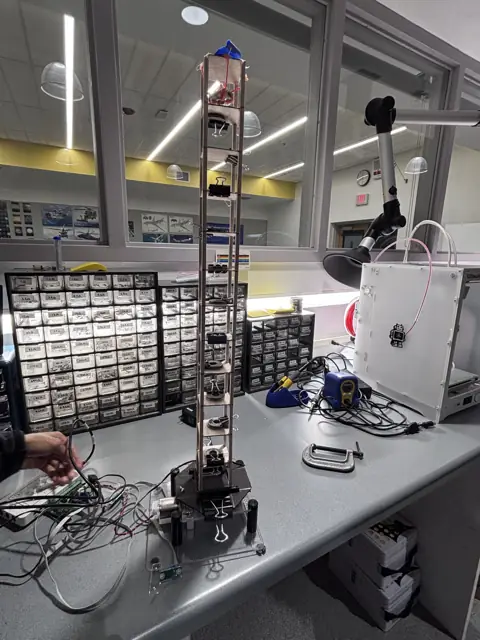
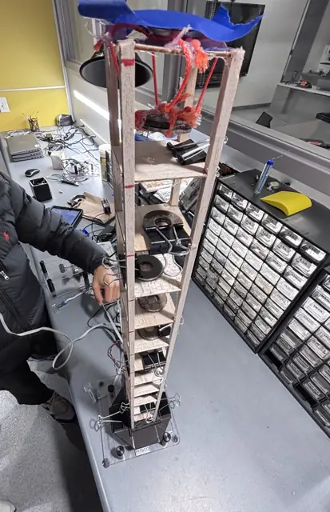

Safer Buildings
About the course
This was Unit 5, Designing with Data, the civil engineering unit of Aerospace Engineering Principles, which is built on UT Austin's Engineer Your World curriculum. The unit teaches students to make design decisions from evidence: gathering and judging data, weighing the needs of different stakeholders, and testing ideas before committing to one.
Project Goal
Goal: make an apartment building safer in an earthquake while meeting the needs of everyone involved, and prove it with data and a tested scale model. The scenario: an eight-story apartment building in Imphal, India, a region prone to earthquakes. The owner wants to rebuild it at least four levels taller on the same 7.5 × 7.5 m footprint while staying within a tight budget. The residents are worried about the building swaying. The city government isn't convinced even the current building is safe in an earthquake. Our team acted as engineers for the owner, balancing all three sets of needs.
What I Built
We analyzed earthquake data as a team. I co-created a research presentation on tuned mass dampers, using Taipei 101, the Citigroup Center, and the Shanghai Tower as real-world examples. We then built a tall, narrow balsa-wood scale model of the building with weighted floors and a pendulum mass damper hanging from the roof, and tested it on a shake table. We laid out the tradeoffs honestly: it costs some top-floor living space, money, and upkeep, but it reduces earthquake repair costs and the sway that worried residents.
Photos & Visuals




Build Process
- Define the challenge and the customer. Identified who the customer was (the owner) and which needs belonged only to the owner (cost) versus the residents (sway).
- Read stakeholder perspectives. Worked from separate briefs written from the owner's, residents', and government's points of view.
- Learn from failures. Investigated why some buildings are destroyed in earthquakes while others survive.
- Judge the data. Asked whether we could trust someone else's data before using it, then analyzed the earthquake data set.
- Define “safe.” Turned a vague goal into criteria we could actually measure and test against.
- Research proven solutions. Studied how engineers have prevented earthquake damage in the past, including the mass damper research.
- Build and shake-test. Built a balsa-wood scale model with weighted floors and a pendulum damper, then tested it on a shake table to compare design ideas and choose the final one.
My Role
I worked on a three-person team. I helped analyze the earthquake data, co-created our research presentation on tuned mass dampers, and helped build and shake-test the scale model.
Key Problem Solved
There was no single “right” answer. The owner wanted profit within a budget, the residents wanted comfort and safety, and the government wanted proof the building could survive an earthquake. The work was finding a design and an argument, backed by data and real precedents, that met all three.
What I Learned
Data-driven decision making, evaluating data sources, stakeholder analysis, the basics of how structures respond to earthquakes, and presenting technical research as a team.